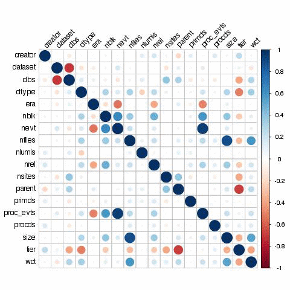

DCAFPilot for CMS
pilot project for CMS computing data-mining
Talk outlines
- Project outlines
- From data to prediction
- gather information from data-services
- prepare information suitable for data analysis
- train learner algorithm
- make prediction
- Future direction
There are too many numbers ...
- DMWM-Analytics (cms-dmwm-analytics@cern.ch) group would like to improve our understanding of CMS computing data, full list of projects: https://twiki.cern.ch/twiki/bin/viewauth/CMS/CMSComputingAnalytics
-
Ultimately we'd like to learn from CMS data and make prediction to improve our resource utilization.
-
Initial goal is to predict popularity of new datasets.
-
Start with understanding metrics, analysis workflow, tools:
- DCAFPilot (Data and Computing Analysis Framework) is a pilot project to understand machinery involved with this problem.
Project outlines
The DCAFPilot consists of several components:
Get the code:
git clone git@github.com:dmwm/DMWMAnalytics.git
Dependencies:
Data collection flow
-
Collect data via the following set of rules
- Collect all datasets (4 DBS instances) into internal cache
- Collection popular datasets from PopularityDB on weekly basis
- Get summary for datasets from DBS/PhEDEx/SiteDB/Dashboard data-services
- Complement dataframe with random set of DBS datasets which were not visible in popularity for given time interval
-
CMS data-service APIs used by DCAFPilot package
- DBS: datasets, releases, filesummaries, releaseversions, datasetparents APIs
- PhEDEx: blockReplicas API
- SiteDB: site-names, people APIs
- PopularityDB: DSStatInTimeWindow API
- Dashboard: jobefficiencyapi API
Data collection flow diagram

Dataframe preparation
generate_scripts.sh, dataframe
# generate run-time scripts starting from given date
prompt$ bin/generate_scripts.sh 20140101 > run.sh
# content of run.sh
prompt$ head run.sh
#!/bin/bash
dataframe --seed-cache
dataframe --start=20140101 --stop=20140108 --dbs-extra=1000 --verbose=1 --fout=dataframe-20140101-20140108.csv
...
# run dataframe generator (you may need to run it in background)
prompt$ dataframe --start=20141126 --stop=20141203 --dbs-extra=1000 --verbose=1 --fout=dataframe-20141126-20141203.csv
# check log content
prompt$ head dataframe-20141126-20141203.log
dbs::fetch url=https://cmsweb.cern.ch/dbs/prod/global/DBSReader//releaseversions, params={'dataset': '/ZMM/Summer11-DESIGN42_V11_428_SLHC1-v1/GEN-SIM'}, docid=0f6c2bcc3970ab7812cfa17f1b92c930
phedex::fetch url=https://cmsweb.cern.ch/phedex/datasvc/json/prod/blockReplicas, params={'dataset': '/ZMM/Summer11-DESIGN42_V11_428_SLHC1-v1/GEN-SIM'}, docid=7c718caf86d31108c57fcf0cad47a722
dbs::fetch url=https://cmsweb.cern.ch/dbs/prod/global/DBSReader//datasetparents, params={'dataset': '/ZMM/Summer11-DESIGN42_V11_428_SLHC1-v1/GEN-SIM'}, docid=d7c76de195d92e4b885376a25db28964
dbs::fetch url=https://cmsweb.cern.ch/dbs/prod/global/DBSReader//datasetparents, params={'dataset': '/ZMM/Summer11-DESIGN42_V11_428_SLHC1-v1/GEN-SIM'}, docid=d7c76de195d92e4b885376a25db28964
dbs::fetch url=https://cmsweb.cern.ch/dbs/prod/global/DBSReader//filesummaries, params={'dataset': '/ZMM/Summer11-DESIGN42_V11_428_SLHC1-v1/GEN-SIM'}, docid=5f41d7d0855411af390e1d2c641c9aa0
dashboard::fetch url=http://dashb-cms-job.cern.ch/dashboard/request.py/jobefficiencyapi, params={'start': '2014-11-26', 'type': 'analysis', 'end': '2014-12-3', 'site': 'all', 'dataset': '/ZMM/Summer11-DESIGN42_V11_428_SLHC1-v1/GEN-SIM'}
popdb::fetch url=https://cms-popularity.cern.ch/popdb/popularity//DSStatInTimeWindow?tstop=2014-12-3&tstart=2014-11-26, params={'tstop': '2014-12-3', 'tstart': '2014-11-26'}
Dataframe preparation, cont'd
Queried 5 CMS data-services: DBS, PhEDEx, SiteDB, PopularityDB, Dashboard
- used 10 APIs to get data content
- feed internal cache with ~220K datasets from 4 DBS instances,
~900 release names, 500+ site names, ~5k people DNs.
- placed ~800K queries
The final dataframe is constructed out of 78 variables and has 52 files and ~600K rows
- each file is worth of 1 week of CMS data, ~600KB zipped/file
- each file has about ~1K of popular datasets plus 10K random "un-popular" datasets
Elapsed time: ~4h to 1h per job, times fade out due to cache usage (MongoDB)
All jobs run on two CERN VM w/ N jobs/core splitting
We anonymized all data and performed factorization via internal cache
id,cpu,creator,dataset,dbs,dtype,era,naccess,nblk,nevt,nfiles,nlumis,nrel,nsites,nusers,parent,primds,proc_evts,procds,rel1_0,rel1_1,rel1_2,rel1_3,rel1_4,rel1_5,rel1_6,rel1_7,rel2_0,rel2_1,rel2_10,rel2_11,rel2_2,rel2_3,rel2_4,rel2_5,rel2_6,rel2_7,rel2_8,rel2_9,rel3_0,rel3_1,rel3_10,rel3_11,rel3_12,rel3_13,rel3_14,rel3_15,rel3_16,rel3_17,rel3_18,rel3_19,rel3_2,rel3_20,rel3_21,rel3_22,rel3_23,rel3_3,rel3_4,rel3_5,rel3_6,rel3_7,rel3_8,rel3_9,relt_0,relt_1,relt_2,rnaccess,rnusers,rtotcpu,s_0,s_1,s_2,s_3,s_4,size,tier,totcpu,wct
999669242,207737071.0,2186,20186,3,0,759090,14251.0,6,21675970,2158,72274,1,10,11.0,5862538,335429,30667701,373256,0,0,0,0,1,1,0,0,0,0,0,0,1,1,0,0,0,0,0,0,0,0,0,0,0,0,0,0,0,0,0,0,1,0,0,0,0,0,0,0,0,0,1,0,1,0,1,0.6,0.4,3.9,0,3,8,0,0,8002,5,64280.0,216946588.0
332990665,114683734.0,2186,176521,3,1,759090,21311.0,88,334493030,32621,86197,1,4,8.0,6086362,968016,123342232,1037052,0,0,0,0,1,2,0,0,0,0,0,0,1,2,0,0,0,0,0,0,0,0,0,0,0,0,0,0,0,0,0,0,1,0,0,0,0,0,0,0,0,1,1,0,1,0,2,0.8,0.3,3.5,0,6,9,0,0,96689,3,58552.0,276683510.0
....
2014 dataset is available at
https://git.cern.ch/web/CMS-DMWM-Analytics-data.git
Dataframe description
id: unique id constructed as long('%s%s%s'%(tstamp,dbsinst,dataset_id)) % 2**30 cpu: CPU time reported by Dashboard data-service for given dataset creator: anonymized DN of the user who created given dataset, reported by DBS dataset: DBS dataset id (comes from DBS APIs/database back-end) dbs: DBS instance id dtype: anonymized DBS data type (e.g. data, mc) era: anonymized DBS acquisition era name associated with given dataset nblk: number of blocks in given dataset, reported by DBS nevt: number of events in given dataset, reported by DBS nfiles: number of files in given dataset, reported by DBS nlumis: number of lumi sections in given dataset, reported by DBS nrel: number of releases associated with given dataset, reported by DBS nsites: number of sites associated with given dataset, reported by PhEDEx parent: parent id of given dataset, reported by DBS primds: anonymized primary dataset name, reported by DBS proc_evts: number of processed events, reported by Dashboard procds: anonymized processed dataset name, reported by DBS rel1_N: DBS release counter defined as N-number of series releases associated with given dataset rel2_N: DBS release counter defined as N-number of major releases associated with given dataset rel3_N: DBS release counter defined as N-number of minor releases associated with given dataset s_X: PhEDEx site counter, i.e. number of Tier sites holding this dataset replica size: size of the dataset, reported by DBS and normalized to GB metric tier: anonymized tier name, reported by DBS wct: wall clock counter for given dataset, reported by Dashboard Target variables: naccess: number of accesses to a dataset, reported by PopularityDB nusers: number of users*days to a dataset, reported by PopularityDB totcpu: number of cpu hours to accessed dataset, reported by PopularityDB rnaccess: naccess(dataset)/SUM_i naccess(i), reported by PopularityDB rnusers: nusers(dataset)/SUM_i nusers(i), reported by PopularityDB rtotcpu: totcpu(dataset)/SUM_i totcpu(i), reported by PopularityDB
Live Data plots

|

|
Correlations

Subset of variables, showing all of them in single plot can hard to swallow.Dataset popularity

|

|
Different dataset popularity metrics

|

|
Therefore, target defition should be clearly defined. For the rest of slides I'll stick with naccess.
How to proceed
- Once we generated the data we want to learn from it and make prediction
- Transform and pivot the data to gain as mush as possible
- Use Machine Learning algorithms, e.g. regression, classification or online learning techniques to find best model
- Use different tools and libraries (R, python, VW, etc.)
- DCAFPilot project provides all necessary tools to do the job
- generate data
- transform data
- build model and perform its validation
- acquire new data
- make predictions
How to train your model
model
# use model script to train your model
prompt$ model --help
Usage: model.py [options]
Options:
-h, --help show this help message and exit
--scaler=SCALER model scalers: ['StandardScaler', 'MinMaxScaler'], default None
--scorer=SCORER model scorers: ['accuracy', 'adjusted_rand_score', 'average_precision',
'f1', 'log_loss', 'mean_absolute_error', 'mean_squared_error',
'precision', 'r2', 'recall', 'roc_auc'], default None
--learner=LEARNER model learners: ['AdaBoostClassifier', 'AdaBoostRegressor', 'BaggingClassifier',
'BaggingRegressor', 'BernoulliNB', 'DecisionTreeClassifier', 'DecisionTreeRegressor',
'ExtraTreesClassifier', 'ExtraTreesRegressor', 'GaussianNB', 'GradientBoostingClassifier',
'GradientBoostingRegressor', 'KNeighborsClassifier', 'LinearSVC', 'PCA',
'RandomForestClassifier', 'RandomForestRegressor', 'RidgeClassifier',
'SGDClassifier', 'SGDRegressor', 'SVC', 'SVR',
'lda_rfc', 'pca_knc', 'pca_rfc', 'pca_svc'], default RandomForestClassifier
--learner-params=LPARAMS
model classifier parameters, supply via JSON
--learner-help=LEARNER_HELP
Print learner description, default None
--split=SPLIT split level for train/validation, default 0.33
--train-file=TRAIN train file, default train.csv
--newdata=NEWDATA new data file, default None
--idx=IDX initial index counter, default 0
--limit=LIMIT number of rows to process, default -1 (everything)
--verbose=VERBOSE verbose output, default=0
--predict=PREDICT Prediction file name, default None
Learner documentation
prompt$ model --learner-help=RandomForestRegressor
RandomForestRegressor(bootstrap=True, compute_importances=None,
criterion='mse', max_depth=None, max_features='auto',
max_leaf_nodes=None, min_density=None, min_samples_leaf=1,
min_samples_split=2, n_estimators=10, n_jobs=1, oob_score=False,
random_state=None, verbose=0)
A random forest regressor.
A random forest is a meta estimator that fits a number of classifying
decision trees on various sub-samples of the dataset and use averaging
to improve the predictive accuracy and control over-fitting.
Parameters
----------
n_estimators : integer, optional (default=10)
The number of trees in the forest.
criterion : string, optional (default="mse")
The "function" to measure the quality of a split. The only supported
criterion is "mse" for the mean squared error.
Note: this parameter is tree-specific.
max_features : int, float, string or None, optional (default="auto")
The number of features to consider when looking for the best split:
- If int, then consider `max_features` features at each split.
- If float, then `max_features` is a percentage and
`int(max_features * n_features)` features are considered at each
split.
- If "auto", then `max_features=n_features`.
- If "sqrt", then `max_features=sqrt(n_features)`.
- If "log2", then `max_features=log2(n_features)`.
- If None, then `max_features=n_features`.
...
First results
merge_csv, model
# get the data, we keep it sequre in separate CERN based repository
prompt$ git clone https://:@git.cern.ch/kerberos/CMS-DMWM-Analytics-data
# merge all 2014 files into single file
prompt$ merge_csv --fin=CMS-DMWM-Analytics-data/Popularity/DCAFPilot/data/0.0.2 --fout=2014.csv.gz --verbose
# Train the model
prompt$ model --learner=RandomForestRegressor --train-file=2014.csv.gz --scorer=r2
RandomForestRegressor(bootstrap=True, compute_importances=None,
criterion='mse', max_depth=None, max_features='auto',
max_leaf_nodes=None, min_density=None, min_samples_leaf=1,
min_samples_split=2, n_estimators=10, n_jobs=1, oob_score=False,
random_state=None, verbose=0)
Feature ranking:
1. importance 0.558986, feature nsites
2. importance 0.105061, feature s_2
3. importance 0.074761, feature rel3_0
4. importance 0.049544, feature proc_evts
5. importance 0.043663, feature s_1
6. importance 0.035363, feature rel3_2
7. importance 0.034260, feature s_3
8. importance 0.029350, feature rel3_4
9. importance 0.005171, feature relt_2
Score metric (r2): 0.897606379597
Definition: r2=1-Sres/Stot, Stot=SUM_i(Y_i-Y_hat)^2, Sres=SUM_i(F_i-Y_hat)^2
Too many things to test first, e.g. scaling, feature selection, model choice, cross-validation, etc.
Other learners
# run AdaBoost regressor model
prompt$ model --learner=AdaBoostRegressor --train-file=2014.csv.gz --scorer=r2 --scaler=StandardScaler
AdaBoostRegressor(base_estimator=None, learning_rate=1.0, loss='linear',
n_estimators=50, random_state=None)
Score metric (r2): -0.943959694892
# run Bagging regressor model
prompt$ model --learner=BaggingRegressor --train-file=2014.csv.gz --scorer=r2 --scaler=StandardScaler
BaggingRegressor(base_estimator=None, bootstrap=True,
bootstrap_features=False, max_features=1.0, max_samples=1.0,
n_estimators=10, n_jobs=1, oob_score=False, random_state=None,
verbose=0)
Score metric (r2): -2.11591876017
Observation: Should we restrict ourselves by regression model and specific package/language?
Use R and do classification
R-language, e1071 library (Support Vector Machine classification)
library(e1071)
csv_files <- list.files(path="./", full.names=TRUE, pattern="dataframe-.*.csv.gz")
df <- read.csv(file=csv_files[1])
for ( i in 2:length(csv_files) ) {
df <- rbind(df,read.csv(file=csv_files[1]))
}
# remove variables which will not be useful for predicting _new_ data popularity
df <- df[,cbind("cpu","creator","dtype","era","nblk","nevt","nfiles","nlumis",
"parent","primds","proc_evts","procds","size","tier","wct","target")]
# define classifcation
df$target <- df$target > 0.001
dLen <- nrow(df)
nTrain <- floor(dLen * 0.8)
dTrain <- df[1:nTrain,]
dTest <- df[nTrain+1:(dLen-nTrain-1),]
# The default cost=1 gives only 90% accuracty, 2611 support vectors.
# cost=10 gives 97% accuracy with 1012 support vectors.
# cost=100 gives 100% accuracy with only 431 support vectors.
# putting the cost to infinity (10^6) gives 285 support vectors.
s <- svm(target ~ ., data=dTrain, type="C-classification", cost=50)
print(s) # 542 support for cost=50
yTest <- predict(s,dTest)
print("Confusion matrix for test sample")
print(table(yTest,dTest$target))
From data to prediction
- Generate dataframe or get it from existing repository
- Transform data into suitable format for ML
- Build ML model
- use classification or regression techniques
- train and validate your model
- split data into train and validation sets
we have ~600K rows in 2014 dataset
train set (Jan-Nov), test set (Dec) - estimate your predictive power on validation set
- split data into train and validation sets
- Generate new data and transform it similar to step #2.
- Apply your best model to new data to make prediction
- Verify prediction with popularity DB once data metrics become available
From data to prediction, step 1-3
merge_csv, model, check_prediction, pred2dataset
# get the data, we keep it secure in separate CERN based repository
prompt_1$ git clone https://:@git.cern.ch/kerberos/CMS-DMWM-Analytics-data
# merge dataframes, then split 2014.csv.gz into train/valid datasets
prompt_2$ merge_csv --fin=CMS-DMWM-Analytics-data/Popularity/DCAFPilot/data/0.0.3 --fout=2014.csv.gz --verbose
# transform data into classification problem and remove useless variables
prompt_3$ transform_csv --fin=2014.csv.gz --fout=train_clf.csv.gz --target=naccess --target-thr=100 \
--drops=nusers,totcpu,rnaccess,rnusers,rtotcpu,nsites,s_0,s_1,s_2,s_3,s_4,wct
# train the model
prompt_4$ model --learner=RandomForestClassifier --idcol=id --target=target --train-file=train_clf.csv.gz \
--scaler=StandardScaler --newdata=valid_clf.csv.gz --predict=pred.txt
# check prediction
prompt_5$ check_prediction --fin=valid_clf.csv.gz --fpred=pred.txt --scorer=accuracy,precision,recall,f1
Score metric (precision_score): 0.79773214833
Score metric (accuracy_score): 0.982348203499
Score metric (recall_score): 0.952781844802
Score metric (f1_score): 0.868390325271
Precision=TP/(TP+FP), Accuracy=(TP+TN)/(TP+TN+FP+FN), Recall=TP/(TP+FN), F1=2*Precision*Recall/(Precision+Recall)
# convert prediction into human/CMS data format
prompt_6$ pred2dataset --fin=pred.txt --fout=pred.txt.out
# inspect prediction
prompt_7$ head -2 pred.txt.out
1.000,/GenericTTbar/HC-CMSSW_7_0_4_START70_V7-v1/GEN-SIM-RECO
1.000,/SingleMu/Run2012D-22Jan2013-v1/AOD
Making predictions, steps 4-6
dataframe, transform_csv, model, pred2dataset, popular_datasets, verify_predictions
# seed dataset cache (w/ MongoDB back-end)
prompt_1$ dataframe --seed-cache --verbose=1
# get new data from DBS (you may need to run it in background)
prompt_2$ dataframe --start=20150101 --stop=20150108 --newdata --verbose=1 --fout=new-20150101-20150108.csv
# transform new data into classification problem similar to our train data
prompt_3$ transform_csv --fin=new-20150101-20150108.csv.gz --fout=newdata-20150101-20150108.csv.gz --target=naccess \
--target-thr=100 --drops=nusers,totcpu,rnaccess,rnusers,rtotcpu,nsites,s_0,s_1,s_2,s_3,s_4,wct
# run the model with new data
prompt_4$ model --learner=RandomForestClassifier --idcol=id --target=target --train-file=train_clf.csv.gz \
--scaler=StandardScaler --newdata=newdata-20150101-20150108.csv.gz --predict=pred.txt
# produce human readable format and inspect its output
prompt_5$ pred2dataset --fin=pred.txt --fout=pred.txt.out
prompt_6$ head -2 pred.txt.out
0.000,/RelValQCDForPF_14TeV/CMSSW_6_2_0_SLHC22_patch1-PH2_1K_FB_V6_UPG23SHNoTaper-v1/GEN-SIM-DIGI-RAW
0.000,/RelValQCDForPF_14TeV/CMSSW_6_2_0_SLHC22_patch1-PH2_1K_FB_V6_UPG23SHNoTaper-v1/DQMIO
# get popular datasets from popularity DB
prompt_7$ popular_datasets --start=20150101 --stop=20150108 > popdb-20150101-20150108.txt
# verify our prediction against similar period from popularity DB
prompt_8$ verify_predictions --pred=pred.txt.out --popdb=popdb-20150101-20150108.txt
Popular datasets : 841
Predicted datasets : 187
Wrongly predicted : 0
Conclusions & Future directions
- We show the proof of concept how to predict dataset popularity based on existing CMS tools
- DCAFPilot package has main components to do the work: dataframe, transform_csv, merge_csv, model, pred2dataset, popular_datasets, check_prediction, verify_predictions
- We succeed making sensible prediction with simple RF model
- Even though initial dataframe/model shows some potential it should be thoughtfully studied to avoid main ML obstacles, e.g. data memorization, over-fitting, etc., and checked with new data
- More data in terms of volume and attributes may be required for further analysis, e.g. find physicists clustering on certain topics
- Even though all work was done on a single node with existing APIs we may need to pursue other approaches, e.g. ORACLE-Hadoop mapping, etc.
-
Explore various ML algorithms: python, R, online-learning
-
Try out different popularity metrics, e.g. naccess, ncpu, nusers or any
combination of them
-
Explore different approaches: track individual datasets, dataset groups, etc.
-
Use other resources: user activity on HN, conference deadlines influence, etc.
-
Test predictions with real data, i.e. acquire new datasets and make prediction for them,
then wait for data from popularity DB and compare prediction with actual data
- Automate tools, e.g. weekly crontabs, generate model updates, verify model predictions